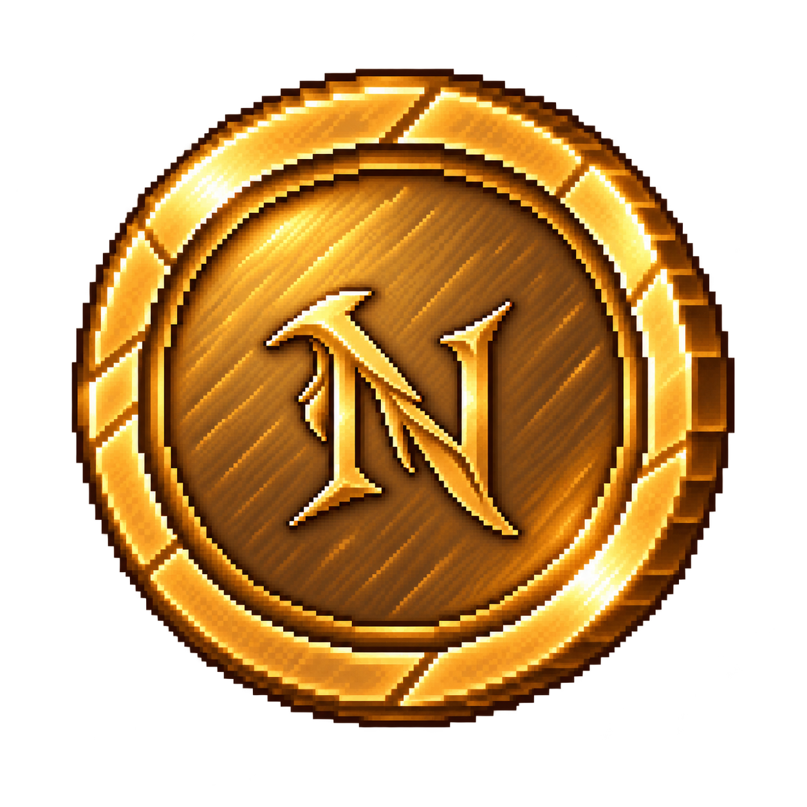

Équipement — Objets & Consommables
De la simple potion de soin aux objets plus spécialisés, ces objets accompagnent les aventuriers sur la route. Chacun a un usage précis, à choisir selon la situation.
Soins

Restaure une petite quantité de PV. Objet simple et abordable, utile après une action risquée ou un combat.

15 pièces
Restaure davantage de PV qu'une potion de soin. Plus chère, mais plus efficace pour récupérer après une grosse perte de vie.
Objets utilitaires

Permet d'effectuer 1 action supplémentaire. Le tonique est consommé après utilisation.

Augmente temporairement les dégâts infligés, mais réduit légèrement la défense pendant toute la durée de l'effet.

Donne un bonus de chance sur le prochain dé lancé après son utilisation. Le bonus ne s'applique qu'à un seul lancer.

Permet d'ouvrir certains coffres verrouillés rencontrés pendant les actions. Il ne garantit pas forcément une grosse récompense, mais donne accès à leur contenu.

Accorde une petite réduction sur le prochain achat effectué en boutique. Le jeton est consommé après utilisation.